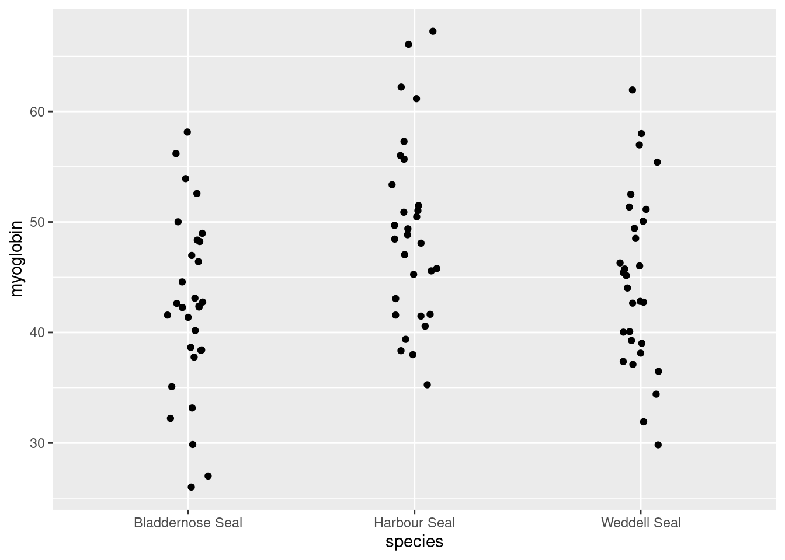

adip_summary <- adipocytes %>%
group_by(treatment) %>%
summarise(mean = mean(adiponectin),
std = sd(adiponectin),
n = length(adiponectin),
se = std/sqrt(n))Summarising data in with several variables and the role of variables in analysis
Introduction
Session overview
In this workshop you will learn summarise and plot datasets with more than one variable. You will also get more practice with working directories, importing data, formatting figures and the pipe.
Philosophy
Workshops are not a test. It is expected that you often don’t know how to start, make a lot of mistakes and need help. It is expected that you are familiar with independent study content before the workshop. However, you need not remember or understand every detail as the workshop should build and consolidate your understanding. Tips
- don’t worry about making mistakes
- don’t let what you can not do interfere with what you can do
- discussing code with your neighbours will help
- look things up in the independent study material
- look things up in your own code from earlier workshops
- there are no stupid questions
Key
These four symbols are used at the beginning of each instruction so you know where to carry out the instruction.
 Something you need to do on your computer. It may be opening programs or documents or locating a file.
Something you need to do on your computer. It may be opening programs or documents or locating a file.
 Something you should do in RStudio. It will often be typing a command or using the menus but might also be creating folders, locating or moving files.
Something you should do in RStudio. It will often be typing a command or using the menus but might also be creating folders, locating or moving files.
 Something you should do in your browser on the internet. It may be searching for information, going to the VLE or downloading a file.
Something you should do in your browser on the internet. It may be searching for information, going to the VLE or downloading a file.
 A question for you to think about and answer. Record your answers in your script for future reference.
A question for you to think about and answer. Record your answers in your script for future reference.
Getting started
Start RStudio from the Start menu.
Make an RStudio project for this workshop by clicking on the drop-down menu on top right where it says Project: (None) and choosing New Project, then New Directory, then New Project. Name the RStudio Project ‘week-9’.
Make a new folder called data-raw. You can do this on the Files Pane by clicking New Folder and typing into the box that appears.
Make a new script then save it with a name like analysis.R to carry out the rest of the work.
Add a comment to the script: # Summarising data in with several variables and the role of variables in analysis
Add code to load the tidyverse package
Exercises
Adiponectin secretion
Adiponectin is exclusively secreted from adipose tissue and modulates a number of metabolic processes. Nicotinic acid can affect adiponectin secretion. 3T3-L1 adipocytes were treated with nicotinic acid or with a control treatment and adiponectin concentration (pg/mL) measured. The data are in adipocytes.txt. Each row represents an independent sample of adipocytes and the first column gives the concentration of adiponectin and the second column indicates whether they were treated with nicotinic acid or not.
Import
Save adipocytes.txt to your data-raw folder
Read the data into a dataframe called adipocytes.
What types of variables do you have in the adipocytes dataframe? What role would you expect them to play in analysis?
Summarise
Summarising the data for each treatment group is the next sensible step. The most useful summary statistics for a continuous variable like adiponectin are the means, standard deviations, sample sizes and standard errors. You might remember from last week that we use the group_by() and summarise() functions along with the functions that do the calculations.
Create a data frame called adip_summary that contains the means, standard deviations, sample sizes and standard errors for the control and nicotinic acid treated samples.
You should get the following numbers:
| treatment | mean | std | n | se |
|---|---|---|---|---|
| control | 5.546000 | 1.475247 | 15 | 0.3809072 |
| nicotinic | 7.508667 | 1.793898 | 15 | 0.4631824 |
Visualise
Most commonly, we put the explanatory variable on the x axis and the response variable on the y axis. A continuous response, particularly one that follows the normal distribution, is best summarised with the mean and the standard error. In my opinion, you should also show all the raw data points if possible.
We are going to create a figure like this:

In this figure, we have the data points themselves which are in adipocytes dataframe and the means and standard errors which are in the adip_summary dataframe. That is, we have two dataframes we want to plot.
Here you will learn that dataframes and aesthetics can be specified within a geom_... (rather than in the ggplot()). This is very useful if the geom only applies to some of the data you want to plot.
I will build the plot up in small steps you should edit your existing ggplot() command as we go.
Plot the data points first.
Notice how we have given the data argument and the aesthetics inside the geom. The variables treatment and adiponectin are in the adipocytes dataframe
So the data points don’t overlap, we can add some random jitter in the x direction:
ggplot() +
geom_point(data = adipocytes,
aes(x = treatment, y = adiponectin),
position = position_jitter(width = 0.1, height = 0))
Note that position = position_jitter(width = 0.1, height = 0) is inside the geom_point() parentheses, after the aes() and a comma.
We’ve set the vertical jitter to 0 because, in contrast to the categorical x-axis, movement on the y-axis has meaning (the adiponectin levels).
Let’s make the points a light grey:
ggplot() +
geom_point(data = adipocytes,
aes(x = treatment, y = adiponectin),
position = position_jitter(width = 0.1, height = 0),
colour = "grey50")
Now to add the errorbars. These go from one standard error below the mean to one standard error above the mean.
Add a geom_errorbar() for errorbars:
ggplot() +
geom_point(data = adipocytes, aes(x = treatment, y = adiponectin),
position = position_jitter(width = 0.1, height = 0),
colour = "grey50") +
geom_errorbar(data = adip_summary,
aes(x = treatment, ymin = mean - se, ymax = mean + se),
width = 0.3) 
We have specified the adip_summary dataframe and the variables treatment, mean and se are in that.
There are several ways you could add the mean. You could use geom_point() but I like to use geom_errorbar() again with the ymin and ymax both set to the mean.
Add a geom_errorbar() for the mean:
ggplot() +
geom_point(data = adipocytes, aes(x = treatment, y = adiponectin),
position = position_jitter(width = 0.1, height = 0),
colour = "grey50") +
geom_errorbar(data = adip_summary,
aes(x = treatment, ymin = mean - se, ymax = mean + se),
width = 0.3) +
geom_errorbar(data = adip_summary,
aes(x = treatment, ymin = mean, ymax = mean),
width = 0.2)
Alter the axis labels and limits:
ggplot() +
geom_point(data = adipocytes, aes(x = treatment, y = adiponectin),
position = position_jitter(width = 0.1, height = 0),
colour = "grey50") +
geom_errorbar(data = adip_summary,
aes(x = treatment, ymin = mean - se, ymax = mean + se),
width = 0.3) +
geom_errorbar(data = adip_summary,
aes(x = treatment, ymin = mean, ymax = mean),
width = 0.2) +
scale_y_continuous(name = "Adiponectin (pg/mL)",
limits = c(0, 12),
expand = c(0, 0)) +
scale_x_discrete(name = "Treatment",
labels = c("Control", "Nicotinic acid"))
Format the figure in a way that is more suitable for including in a report:
ggplot() +
geom_point(data = adipocytes, aes(x = treatment, y = adiponectin),
position = position_jitter(width = 0.1, height = 0),
colour = "gray50") +
geom_errorbar(data = adip_summary,
aes(x = treatment, ymin = mean - se, ymax = mean + se),
width = 0.3) +
geom_errorbar(data = adip_summary,
aes(x = treatment, ymin = mean, ymax = mean),
width = 0.2) +
scale_y_continuous(name = "Adiponectin (pg/mL)",
limits = c(0, 12),
expand = c(0, 0)) +
scale_x_discrete(name = "Treatment",
labels = c("Control", "Nicotinic acid")) +
theme_classic()
xxx
data set with three groups seals
xxx
data set with two groups but need pivoting biomass
xxx
data set with two explanatory periwinkles
We did the first of these last week. The geom_col() function uses the numbers in a second column to determine how high the bars are. However, the geom_bar() function will do the tabulating for you.
Look after future you!
Future you is going to summarise and plot data from the “River practicals”. You can make this much easier by documenting what you have done now. At the moment all of your code from this workshop is in a single file, probably called analysis.R. I recommend making a new script for each of data set and copying the code which imports, summarises and plots it. This will make it easier for future you to find the code you need. Here is an example: seals-analysis.R. You may wish to comment your version much more.
You’re finished!
🥳 Well Done! 🎉

Independent study following the workshop
The Code file
These contain all the code needed in the workshop even where it is not visible on the webpage.
The workshop.qmd file is the file I use to compile the practical. Qmd stands for Quarto markdown. It allows code and ordinary text to be interweaved to produce well-formatted reports including webpages. Right-click on the link and choose Save-As to download. You will be able to open the Rmd file in RStudio. Alternatively, View in Browser. Coding and thinking answers are marked with #---CODING ANSWER--- and #---CODING ANSWER---
Pages made with Quarto (Allaire et al. 2022)
References
Allaire, J. J., Charles Teague, Carlos Scheidegger, Yihui Xie, and Christophe Dervieux. 2022. Quarto. https://doi.org/10.5281/zenodo.5960048.